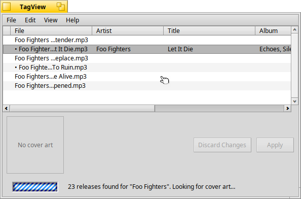

CoverArtFetch
Finds front covers on the Cover Art Archive.
#include "tagkit/CoverArtFetch.h"
Detailed Description
Looks up each release's front cover with libcoverart. Both functions perform network I/O, one request per release, so always call them from a worker thread, never the UI thread.
Releases with no cover art, or whose fetch fails, are skipped: one missing cover doesn't stop the others. The result can hold fewer images than there were releases, or none at all.

While covers are being fetched on a worker thread, the window shows progress and stays usable.
Types
typedef std::function<void(const CoverArtImage&)> CoverArtFoundFunctionCalled once per cover as soon as it has been fetched. |
Functions
int32 fetch_cover_art(const std::vector<ReleaseRef>& releases, int32 maxImages, const CoverArtFoundFunction& found)Fetches covers, handing each over the moment it arrives. |
std::vector<CoverArtImage> fetch_cover_art(const std::vector<ReleaseRef>& releases, int32 maxImages = 12)Fetches each release's front cover until enough have been found. |
Documentation
typedef std::function<void(const CoverArtImage&)> CoverArtFoundFunction
Called once per cover as soon as it has been fetched.
int32 fetch_cover_art(const std::vector<ReleaseRef>& releases, int32 maxImages, const CoverArtFoundFunction& found)
Fetches covers, handing each over the moment it arrives.
A caller can show the first covers while the rest are still being
fetched. found() is called on the calling (worker) thread.
Parameters
releases- The releases to check, in order (see ReleaseRef).
maxImages- Stop once this many covers have been found.
found- Called with each cover.
Returns
How many covers were found.
std::vector<CoverArtImage> fetch_cover_art(const std::vector<ReleaseRef>& releases, int32 maxImages = 12)
Fetches each release's front cover until enough have been found.
Parameters
releases- The releases to check, in order.
maxImages- Stop once this many covers have been found.
Returns
The covers found.
src/tagkit.